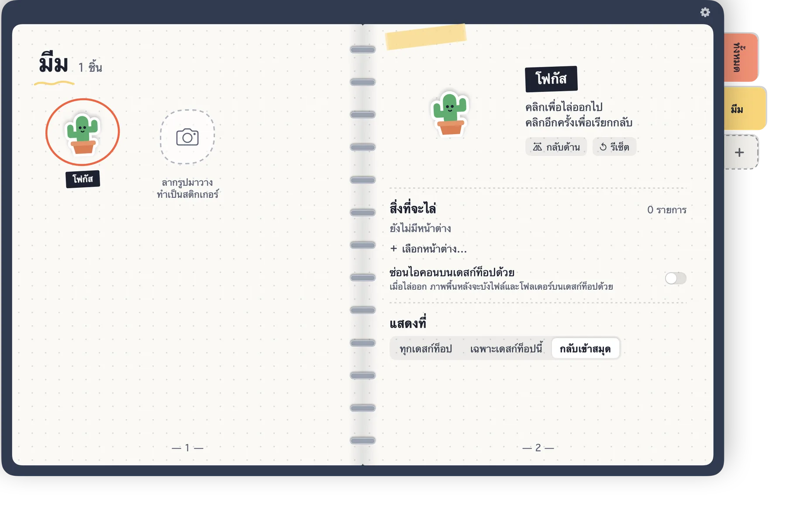

สมุดสติกเกอร์สำหรับเดสก์ท็อป Mac
คลิกสติกเกอร์ หน้าต่างก็หายไป
แปะ Shoo บนเดสก์ท็อป แล้วบอกว่าให้ดูแลแอปหรือหน้าต่างไหน คลิกครั้งเดียวทุกอย่างหายไป คลิกอีกครั้งทุกอย่างกลับมาที่เดิม


คลิกเดียว เดสก์ท็อปสะอาด
ลองดู: เลือกสถานการณ์ แล้วคลิกปีศาจน้อย
ทำให้เป็นของคุณ
รูปไหนก็ทำเป็นสติกเกอร์ได้ — หมาของคุณ เพื่อน หรือมีมที่ชอบ — แล้วให้แต่ละแผ่นทำหน้าที่ต่างกัน

ลากรูปเข้าไปในสมุดหรือคลิกที่รูปก็ได้
- ลากรูปเข้ามา Shoo ตัดพื้นหลังบน Mac ให้เลย
- จัดสติกเกอร์ด้วยแท็บและสีของคุณเอง
- สติกเกอร์แต่ละแผ่นซ่อนหน้าต่างชุดของตัวเอง
ใช้งานอย่างไร
สามขั้นตอน ไม่มีหน้าตั้งค่า
ลอกสติกเกอร์
ลากสติกเกอร์ออกจากสมุดไปแปะที่ไหนก็ได้บนเดสก์ท็อป
ชี้ที่หน้าต่าง
เลือก “เลือกหน้าต่าง…” แล้วคลิกหน้าต่างหรือแอปที่ให้สติกเกอร์นี้ดูแล
คลิก Shoo!
คลิกสติกเกอร์เพื่อซ่อนทั้งหมด คลิกอีกครั้งเพื่อเรียกกลับ
รายละเอียดเล็ก ๆ ที่ใช้แล้วสบาย
ทุกอย่างเกิดขึ้นบน Mac ของคุณ ในสมุดเล่มนี้
- หน้าต่างเดียวหรือทั้งแอปSafari, Chrome, โน้ต และ Finder ซ่อนทีละหน้าต่างได้ แอปอื่นจะซ่อนทั้งแอป
- ซ่อนไอคอนบนเดสก์ท็อปด้วยระหว่างที่สติกเกอร์ทำงาน ใช้วอลเปเปอร์ของคุณปิดไฟล์บนเดสก์ท็อป
- ทุกเดสก์ท็อปหรือเฉพาะเดสก์ท็อปนี้วางสติกเกอร์ไว้ทุกเดสก์ท็อป หรือเก็บไว้ที่เดียว
- แก้ไขในสมุดได้เลยเปลี่ยนชื่อ ขนาด หมุน และกลับด้าน ตรงที่เห็นเลย
- ไม่เกะกะเลือกให้ Shoo แสดงใน Dock แถบเมนู หรือไม่แสดงเลย
- หกภาษาEnglish, 繁體中文, 简体中文, 日本語, 한국어 และ ไทย
เริ่มต้นฟรี
ปีศาจน้อยให้ฟรี ใช้ได้ทุกฟีเจอร์ ส่วนที่เหลือซื้อครั้งเดียว ไม่มีการสมัครสมาชิก
 ฟรี
ฟรี
ปีศาจน้อยสีแดง
- ทุกฟีเจอร์ในสติกเกอร์แผ่นเดียว
- ซ่อนหน้าต่าง แอป และไอคอนบนเดสก์ท็อป
- ทุกภาษา
 ปลดล็อกทั้งหมด
ปลดล็อกทั้งหมด
ซื้อครั้งเดียว
- สติกเกอร์วาดมืออีก 5 แบบ
- ทำสติกเกอร์จากรูปของคุณ
- แท็บหมวดหมู่และสีของคุณเอง
- ทำสติกเกอร์ได้ไม่จำกัด

โต๊ะของคุณยังเป็นของคุณ
- ไม่ต้องมีบัญชี ไม่มีโฆษณา ไม่ติดตาม
- สติกเกอร์และการตั้งค่าอยู่บน Mac ของคุณเท่านั้น
- ตัดพื้นหลังรูปบน Mac ไม่มีการอัปโหลด
- Shoo แค่ซ่อนและเรียกหน้าต่างที่คุณเลือก ไม่อ่านเนื้อหาข้างใน
คำถามที่พบบ่อย
ทำไม macOS ถามว่าจะให้ Shoo ควบคุม Safari, Chrome, โน้ต หรือ Finder?
นี่คือวิธีที่ Shoo ซ่อนแค่หน้าต่างเดียวของแอปเหล่านั้น Shoo แค่บอกแอปให้ซ่อนหรือแสดงหน้าต่างที่คุณเลือก ถ้าคุณไม่อนุญาต Shoo จะซ่อนทั้งแอปแทน
ซ่อนแอปไหนก็ได้ไหม?
ได้ ทุกแอปซ่อนทั้งแอปได้ ส่วนการซ่อนทีละหน้าต่างรองรับ Safari, Chrome, โน้ต และ Finder
ต้องสมัครสมาชิกไหม?
ไม่ต้อง Shoo ฟรีพร้อมสติกเกอร์ปีศาจน้อย การปลดล็อกทั้งหมดเป็นการซื้อครั้งเดียว